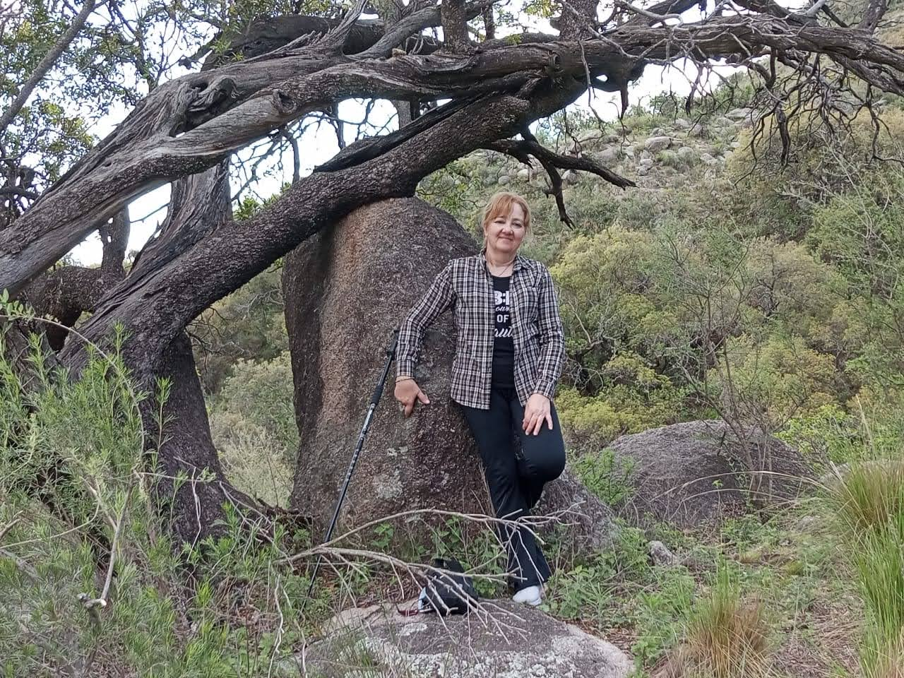
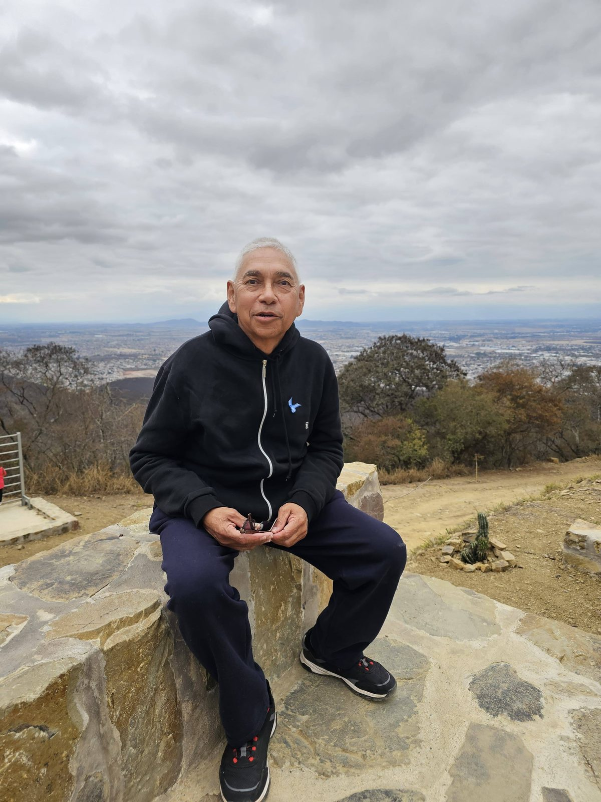

Un poco de mí — Kiernan Preve, estudiante de la Licenciatura en Física en la UNSL
El destino no se forma con certezas, sino con las preguntas que elegimos seguir.
Casi licenciada en Física y productora musical de a ratos. Escribo novelas.
Antes de todo esto
A los 8 años mis padres me compraron mi primera computadora. Ese mismo año tomé algunas clases de piano solo por poco tiempo.
Me dijeron que aprender computación era «una llave para abrir puertas».
Entre juegos y enciclopedia Encarta, descubrí que podía crear cosas: probablemente mis primeras creaciones fueron juegos y animaciones en PowerPoint.
Un poco después, gracias a un ex-monje ucraniano, aprendí que podía crear páginas web en FrontPage, y ejecutar algunos comandos básicos con la línea de comandos del sistema operativo.
Empecé creando desde animaciones en PowerPoint hasta aventuras de texto y más tarde mis primeros prototipos en RPG Maker y Game Maker, y la terminal.
A los 13 le pedí a un tío un telescopio y me lo regaló. Por esa época me la pasaba leyendo sobre el espacio en la Encarta, y por ahí cayó en mis manos un CD de El mundo de Sofía. En ese momento no lo pensaba como ciencia: era curiosidad, nada más.
A los 15 o 16 años me interesé por la música. Con la guitarra de mi papá en casa, comencé a aprender por mi cuenta, con un libro, con internet, y luego de un relojero que sabía tocar guitarra clásica.


El camino
Ya de joven adulta, estudié y me convertí en Productora Musical, en la Universidad Nacional de San Luis.
Por aquellos años empecé a escribir un pequeño relato de viajes en el tiempo, que no vería la luz hasta mucho después.
El bichito del interés por la ciencia nunca se fue. En 2017, recién terminada la carrera de música, me tocó ayudar a alguien con un práctico de astronomía y me encontré explicando cosas que no tocaba desde hacía años. Esa semana empecé a ver videos de física, y seguí bastante más de lo que había planeado.
Estuve un tiempo dudando entre tres carreras: Antropología en la UNC, Ciencias de la Computación y Física. Hablé con varios profesores de la UNSL —Diego Valladares, Moira Dolz y otros— y entre todos me terminaron de convencer. En 2018 empecé Física, también en la UNSL.
En el medio estuvo la pandemia, que se llevó buena parte de 2020 a 2023. Apenas pasó, en marzo de ese último año, publiqué mi primera novela: Dentro del origen.
Meses después obtuve mi título de Auxiliar Universitaria en Física Aplicada.
Presente
En 2025, Juan Pablo de Rosas —un profe con el que cursé física experimental y encaré un par de proyectos— me comentó que el Dr. Leonardo Makinistián estaba buscando a alguien para un tema de magnetobiología. No esperé mucho y le escribí yo.
Ese mismo año cursé su materia, y en marzo de 2026 empecé formalmente la tesis. Nos entendimos rápido y trabajar con él es muy ameno.
Trabajo en el laboratorio y ahí mismo estudio para los finales. De noche escribo la novela o hago música.
Y algunas tardes me las guardo para los amigos, entre mates o café.
— Kier